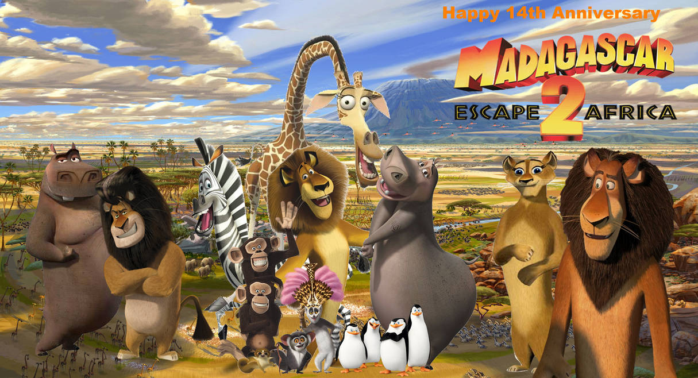

Trailer
Personagens
Sinopse
Madagascar 2: A Grande Escapada (2008) é a sequência da animação de sucesso da DreamWorks.
A história continua acompanhando Alex, o leão; Marty, a zebra; Melman, a girafa; e Gloria,
a hipopótamo, que decidem deixar Madagascar e voltar para o zoológico de Nova York. Com a
ajuda dos pinguins, eles consertam um avião velho e decolam — mas a viagem dá errado, e o
grupo acaba caindo no meio da savana africana.Lá, Alex reencontra sua família e descobre
suas origens, enquanto cada personagem vive uma jornada pessoal: Marty percebe que não é
tão único quanto pensava, Gloria explora um romance com outro hipopótamo, e Melman encara
seus sentimentos por ela.A animação mistura comédia, emoção e mensagens sobre identidade e
pertencimento, com cenários vibrantes e personagens carismáticos. É uma aventura que aprofunda
os laços de amizade e a busca por autodescoberta.
Informações Técnicas
- Diretores:Eric Darnell e Tom McGrath
- Elenco principal:
Ben Stiller como Alex (o leão)
Chris Rock como Marty (a zebra)
David Schwimmer como Melman (a girafa)
Jada Pinkett Smith como Gloria (a hipopótama)
Sacha Baron Cohen como King Julien (o lêmure)
Cedric the Entertainer como Maurice (o lêmure)
Andy Richter como Mort (o lêmure)
Bernie Mac como Zuba (o leão, pai de Alex)
- Duração: 89 minutos
- Classificação: Livre (para todos os públicos)
- Gênero: Animação,Aventura e Comédia